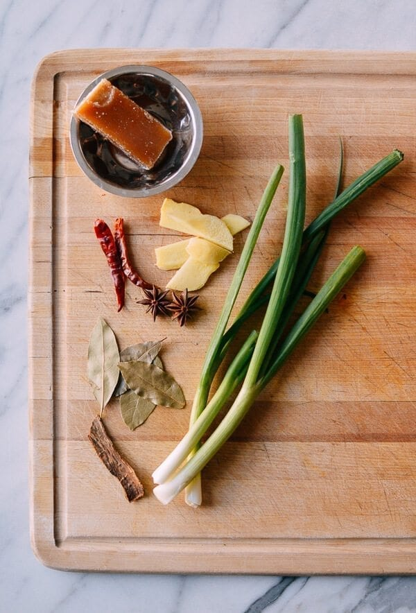

Shanghai Braised Pork Belly

Description
Braised Pork Belly is a very popular dish in China. The taste of this dish varies from city to city. This recipe is based on the traditional recipe of Shanghai city.
In Shanghai, Braised Pork Belly always comes with the taste of pure, dark soy sauce.
You will find this dish being heavily flavored with spices because 'The dish is incomplete without chili and pepper' in Chinese culture.
The two common themes of Shanghai Braised Pork Belly are:
- Caramelize the sugar to add color, richness, and sheen.
- Add dried hot chili pepper to enhance the flavour and aromatics
Ingredients

2 pounds pork belly
6 slices ginger
2 tablespoons oil
3 tablespoons sugar
3 scallions
½ cup Shaoxing wine
3 tablespoons light soy sauce
1½ tablespoons dark soy sauce
1 cinnamon stick
2 star anise
4 bay leaves
1-2 dried chili peppers (optional)
4 cups water
Steps
-
Blanch the pork belly.
Add the pork belly and 3 slices of ginger to a pot with enough cold water to submerge the pork belly.
Close to lid and bring it to a boil.
Once the pot boils, turn down the heat and simmer for one minute.
Drain, rinse the pork belly clean, and set aside.
-
Caramelize the pork belly.
Add the oil and rock sugar (or 3 tablespoons regular sugar) to a low heat wok.
Slowly melt the sugar, taking care to not let it burn.
Then add the pork belly, 3 slices ginger, and the white parts of the scallions.
Turn up the heat to medium while stiring to coat the pork belly.
-
Create the signature taste of soy sauce.
Add Shaoxing wine, light soy sauce, dark soy sauce, cinnamon, star anise, bay leaves, dried chili peppers, and water.
Stir and make sure everything is submerged.
Bring the mixture up to a simmer over medium low heat for 1 hour.
Check the pork periodically to make sure the sauce doesn’t dry up.
-
Make the sauce for the dish.
Once the pork is to your liking in terms of tenderness, turn up the heat to cook off any excess sauce, stirring constantly.
The sauce will reduce to a glistening coating on the pork belly.
Last, add ½ teaspoon sugar and the green parts of the scallions.
Stir quickly and serve!
ENJOY YOUR DELICIOUS MEAL!
Reference: The Wok of Life